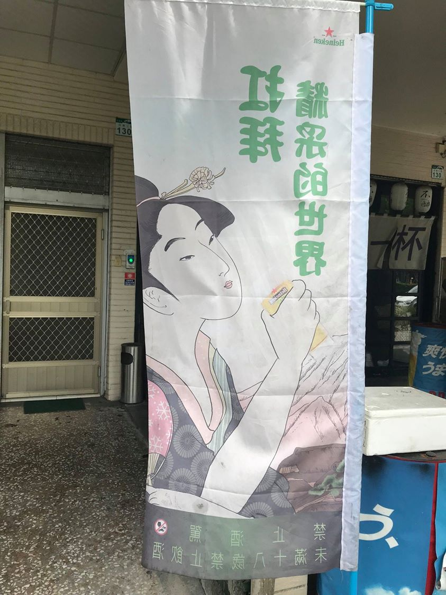
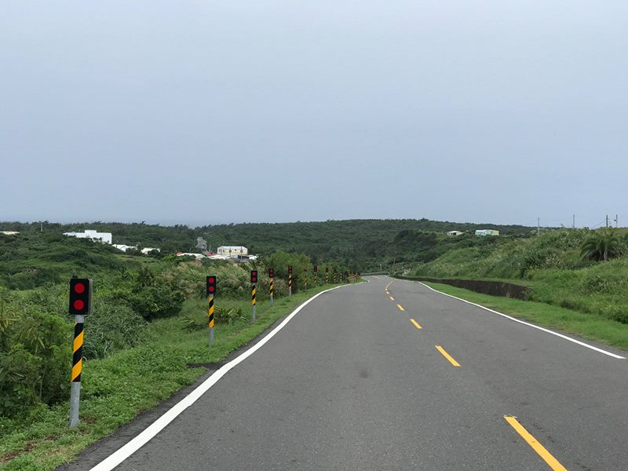
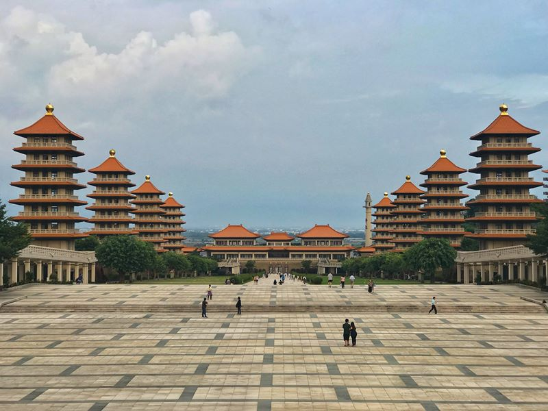
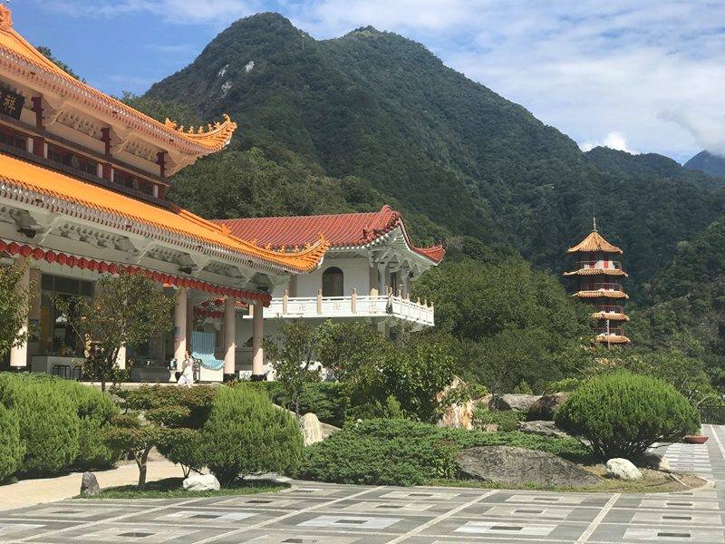

Tchaj-wan léto 2018
Několik momentek z té druhé Číny. 1. Kaohsiung 2. Kenting 3. Pěšky z Kentingu do Kaohsiungu. 4. Taipei 5. Jiufen 6. Hualien 7. Národní park Taroko 8. Taichung.
Tchaj-wan! Jsem konečně tady. Předchozí dvě letenky na Tchaj-wan mi propadly, vyměnil jsem je za čas s 睿. Takže tohle je můj třetí pokus dostat se sem. A země vypadá úplně jinak, než jsem si ji představoval. Oproti Japonsku nebo J. Koreji je najednou v každé ulici mnohem více zelené barvy!
A také okolní stavby vypadají úplně jinak. Tyhle dva domy v Kao-siungu mě z nějakého důvodu fascinovaly.
Nejvíce mi Tchaj-wan připomíná Vietnam, a to kvůli motorkám, které jsou všude. Stejně jako ve Vietnamu blokují chodníky, takže člověk musí neustále vcházet do silnice, což je dost nepříjemné a nebezpečné a stejně jako ve Vietnamu jezdí plnou rychlostí i po chodnících.

No a stejně jako ve Vietnamu, jsem viděl dopravní nehodu dvou motorek. Když jsem přicházel k přechodu pro chodce, přímo přede mnou se dvě motorky v plné rychlosti srazily. Zatímco muž vyvázl bez zranění, žena, která jela bez přilby, několik vteřin nehybně ležela na silnici a až pak se zvedla. Měla velké štěstí, že tohle přežila.
---
Lidi, vozte přilby! Nejen na motorce, ale i na kole. I já jsem jel jednou, dvakrát na motorce bez přilby. Byla to blbost a už to víckrát neudělám. Jedna Vietnamka mi říkala, že každý den vyjde minimálně jedna zpráva o tom, že se nějaký motorkář ze zahraničí na cestě zabil. Ty nehody na motorce jsou časté a přilba vás může zachránit.

Jídelní lístky. Podobně jako v celé Asii, ani na Tchaj-wanu nemám tušení, co budu jíst. Tentokrát je to ale jednodušší, menu vyfotím, pošlu ho 睿, a ta, protože mě už zná, tak mi vybere jedno jídlo, které mi chutná. Je to vlastně mnohem lepší, než když vím, co to znamená, protože odpadá rozhodovací paralýza. Praktické, efektivní!

Asijská reklama na nizozemský Heineken.

První noc večer jsem se byl podívat na Liuhe Night Market. Je to ulice s velkým množstvím stánků, které nabízejí mnoho pochutin, které 睿 zbožňuje a já bych je pozřel jen po měsíčním půstu, pokud by mi lékař řekl, že druhý den na 100% zemřu, jestliže je nesním.

Druhý den v Kao-siungu jsem se byl podívat po okolí města. Třeba na pagody Draka a Tygra...

...a jen co jsem se k nim přiblížil, přišel za mnou Steve a řekl mi, že chci poznat někoho z daleka a že mě celou oblastí provede. A tak se mnou strávil cca 3 hodiny a prošli jsme vše v okolí. Steve mi popsal nejen Tchaj-wan sám, ale jako buddhista i vše kolem tchajwanského buddhismu.

Jarní a Podzimní pavilony na Lotosovém jezeře...
… a pavilony ještě z druhé strany.
Věštba bohů. Zaplatíte 10 tchajwanských dolarů, žena odejde do chrámu, a vrátí se s věštbou, kterou vám předá. Pak už jen potřebujete čínskou přítelkyni, která věštbu přeloží.
Jedna z pagod na Lotosovém jezeře.

Uvnitř jednoho z buddhistických chrámů.
Pavilon Pei Chi s nejvyšší vodní sochou v JV Asii.

72 metrů vysoká socha Guan Gong.
Později mě Steve vzal i do místní základní školy. Takhle vypadá vstup do tchajwanské základky.
Dětská socha Konfucia v areálu školy.

Ale zpět k výletu. Třetí den ráno jsem se přesunul na jih ostrova, přibližně 9 km od nejjižnějšího místa na Tchaj-wanu. Celý den mi vyskakovaly na telefonu notifikace o přívalových deštích. Když jsem odjížděl z Kao-siungu, v ulicích tekly potoky. Po následující dva týdny to bohužel nebude jiné, předpovědi se liší jen v tom, zda zobrazují “heavy rain”, nebo “extreme rain”.

Po třech dnech přívalových dešťů se počasí konečně zklidnilo, a tak jsem se vydal na začátek celé cesty, na nejjižnější místo Tchaj-wanu. Hned po pár set metrech chůze u mě zastavilo auto a tento milý tchajwanský pár mi nabídl svezení.
A jsem tady. Nejjižnější místo Tchaj-wanu. Není tu vůbec nic zajímavého, ale i za deště tady proudí davy turistů a fotí se tady. Vůbec nevím proč, možná chtějí také přejít Tchaj-wan. V každém případě: začínáme!
První kilometr!

Béééé, bééééé. (Ne)typické tchajwanské domy a umělé ovce.
Národní park Longpan podél pobřeží.
Výhled z národního parku Longpan na východní pobřeží Tchaj-wanu.
Zde jsem chtěl přejít zase přes pevninu na západní pobřeží. Google mapy ale vůbec nefungují, trasy zde vyznačené (už) neexistují. Jediné, co jsem tady našel, bylo tohle auto, které splynulo s přírodou. Pravděpodobně také uživatel Google map.
Sail Rock na západním pobřeží.
Město Kenting, můj cíl první cesty, první den jsem ušel 38 000 kroků. Je tady Kenting road, kde je velké množství stánků a můžete zde koupit cokoliv včetně ovoce a zeleniny.
Moje ubytování první noc. Co mě zaujalo nejvíce je asi to zrcadlo v posteli. Můžete se na sebe dívat jak dlouho chcete!
No a další den jsme zase zpět u přívalových dešťů, nedá se v nich moc chodit. Nebo teda dá, ale je to na prd.
Fo Guang Shan Buddha Museum po cestě do Kaohsiungu….
… s 36 metrů vysokou sochou Buddhy …
A ještě z druhé strany.

Stopem do Kaohsiungu.
Tchajwanské semafory kousek od Kaohsiungu. Když je červená, muž stojí před ženou a pravidelně pokleká a zase vstává.
Stanice metra v Kaohsiungu při cestě do nemocnice.
Tchajwanským shinkansenem do Taipei. Stejně jako v Číně, Japonsku nebo J. Koreji, i na Tchaj-wanu mají vlaky, co jezdí 300+ km/h...
...takže jsem o chvíli později v Taipei. Na Airbnb jsem si vybral nějakým záhadným omylem vybral byt, který nemá klimatizaci, okno, internet a nedá se tam používat ani mobilní internet….
...ale je tam Joy, jedna z nejlepších hostitelek, které jsem kdy měl. Pracuje jako obchodnice na burze, takže na jejím telefonu vidím pořád jen grafy. Prý je to jednoduché, stačí si něco koupit za nižší cenu a pak to prodat za vyšší, easy!
Potvrzuje se, že nejpřátelštější lidi ve východní Asii jsou právě na Tchaj-wanu. Joy mě u sebe nechala pár nocí zadarmo a musím urputně bojovat za to, abych mohl za sebe zaplatit alespoň jídlo.
Nejlepší věc na Taipei? Jednoznačně noční trhy! Nejlepší noční trhy jsou na Tchaj-wanu, nikde jinde nejsou tak pestré.

Místní specialita, rýže obalená v prasečí krvi.
Taipeiské metro.
Půlnoční pohled na město se slavným mrakodrapem Taipei 101, svého času to byla nejvyšší budova světa. Taipei mě asi definitivně přesvědčila o tom, že si pořídím něco na focení.
Momentky z Taipei.
Momentky z Taipei.
Kousek od Taipei je horské město Jiufen.
Prodává se tady třeba zmrzlina v palačince.
Moderní Tchaj-wan. Boty bez USB zásuvky tady už nekoupíte.

Výstup na horu Keelung.
Pohled z Keelungu na Taipei.
A ještě na druhou stranu, východní pobřeží Tchaj-wanu.
Národní park Taroko

Národní park Taroko
Národní park Taroko
Národní park Taroko
Národní park Taroko
Národní park Taroko
Národní park Taroko
Národní park Taroko
Národní park Taroko
Národní park Taroko
Národní park Taroko
Národní park Taroko
Národní park Taroko
Národní park Taroko
Národní park Taroko
Taichung
Rainbow village, Taichung
Rainbow village, Taichung